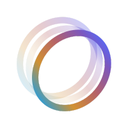
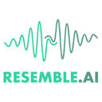

Best AI agents for automating workflows (2026)
Platforms for chaining apps, triggers and AI steps into workflows that run on their own. We list 516 tools for automating workflows below, each with a link-checked page, pricing as the maker states it and alternatives.
Updated
516 tools: 240 open source, 9 source-available, 92 free or freemium, 57 paid, usage-based or enterprise, 118 pricing on the maker's site.
Workflow automation (152) See the full list →
Agently Daily News Collector
An open-source LLM based automatically daily news collecting workflow showcase powered by Agently AI application development framework.
Added
Ospec
Spec-driven, agentic workflow framework for AI coding agents. Turn a request into a verifiable goal loop — plan, act, verify — with durable specs and evidence in your repo. Works with Claude Code, Codex, Gemini, OpenCode, and plain CLI.
Added
Graphai
GraphAI is an asynchronous data flow execution engine, which allows developers to build agentic applications by describing agent workflows as declarative data flow graphs in YAML or JSON.
Added
Comanda
The CLI-native orchestrator for AI agent workflows. Run Claude Code, Codex, Gemini CLI & Kimi Code from declarative YAML. Because the terminal is where real work happens.
Added
Ai Dive Deep
Vlad's Playbook — a 58-chapter operator field manual where every artifact is live, clickable, and forwardable. 32 interactive widgets, a self-updating AI radar, hand-verified model leaderboards, embedded case studies — and the repo runs the agent workflow the book teaches.
Added
Outlit
Outlit gives agents real-time understanding of customers to automate support and revenue workflows.
Added
Agent Rescue Desk Production Triage
Read-only triage for n8n, MCP, webhook, and AI agent workflow production failures.
Added
AggREIgator Pro
Manage AggREIgator buy-boxes and compliant real-estate deal workflows
Added
Amalgix Document Intelligence
Cross-model evidence pipeline for financial filing and contract intelligence. Two core paid workflows — analyze public filing (SEC 10-K/10-Q/20-F, ticker/CIK lookup, metrics, risk changes, contradictions) and review contract risks (MSA/NDA/SaaS/procurement, obligations, deadlines, liability, unusual clauses). Plus MCP compatibility utilities: document analysis, web extraction, summarization, and bulk translation.
Added
FlyDocs
Spec-driven development workflow for AI agents: issue lifecycle, sessions, project updates.
Added
Hackford MCP
Regulated-firm intelligence for FCA and SEC search, enrichment, relationships and saved workflows.
Added
Hexa
Shared company knowledge, workflows, and connected apps for the AIs your team already uses.
Added
IBANforge
IBAN validation and bank-data tools for AI agents, ERP, invoicing and payroll workflows. IBANforge covers 89 countries and provides BIC/SWIFT lookup, Swiss clearing lookup, SEPA and country-risk indicators, payment-reference validation, postal-address checks and Swiss QR-bill checks. The current MCP service offers 11 tools, including batch validation, feedback and API-key requests. Connect to
Added
Judt
Apps and sites for your agent, with databases, storage, queues and workflows built in.
Added
Kubit
Bring Kubit into your AI workflow — query your warehouse with natural language
Added
LLM Prover
Evaluate agent workflows and LLMs on your own data: find wasted steps, pick models, catch drift.
Added
Mink
Discover local events, RSVP, and manage organizer workflows on Mink.
Added
Nodes2Cloud
Build, validate and deploy workflows as Cloudflare Workers in your own account, with approval.
Added
primitive.dev
Email infrastructure for AI agents — send, receive, search, and manage email over a clean HTTP API. Connect verified domains, route inbound mail, set up webhooks, and automate email workflows. Authenticate with a Primitive API key or via OAuth.
Added
Receiptor MCP
Receiptor connects AI agents to your bookkeeping workspace so they can find, review, and organize financial documents such as receipts, bills, and invoices. Use it to inspect workspace context, monitor intake sources, review extracted document data, check integrations, and prepare accountant-ready workflows through secure OAuth access to Receiptor AI.
Added
Roamer MCP
Project registry, behavioral specs, and engineering threads for AI coding agent workflows.
Added
SpaceMolt
Manage and interact with various gaming environments directly through your interface. Automate common tasks like checking player status or updating configurations. Streamline your gaming workflow with real-time control and monitoring capabilities.
Added
Voidly Atlas
Connect to Voidly’s hosted MCP entry point for Atlas censorship data, marketplace discovery, agent mail, and available board and bounty workflows. Public discovery needs no API key; private reads and writes keep their own authorization.
Added

Eko
Eko (Eko Keeps Operating) - Build Production-ready Agentic Workflow with Natural Language - eko.fellou.ai
Added
Langchain4J Aideepin
AI 应用平台（聊天、绘画、知识库、工作流、 MCP服务市场、语音输入输出、长期记忆） | AI application platform (Chat,Draw,RAG,Workflow,MCP marketplace, ASR,TTS, Long-term memory etc)
Added
PM Skills Marketplace
PM Skills Marketplace by Paweł Huryn is an MIT-licensed set of 72 product-management skills and 42 chained workflows in nine plugins for Claude Code and Cowork, with commands like /discover, /strategy, /write-prd, /plan-launch and /north-star that walk you through established discovery, prioritisation, strategy and launch frameworks step by step.
Added
MiniCode
MiniCode is an open-source agent project that helps builders handle terminal coding assistant with Claude Code-like workflow, tool loop, and TUI architecture.
Added
Obelisk
Obelisk is an open-source agent project that helps builders handle every past session, subagent, and workflow -- queryable by your agent, browsable.
Added
Light Science
Light Science is an open-source agent project that helps builders handle research workflow skill pack connecting literature, experiments, figures, writing, memory and project.
Added
FinSight AI
FinSight AI is an open-source agent project that helps builders handle AI equity research agent with resilient workflows, evidence-grounded RAG, versioned reports.
Added
ComfyUI_Skills_OpenClaw
ComfyUI_Skills_OpenClaw is an open-source agent project that helps builders handle agent-friendly ComfyUI workflow skills for OpenClaw, Hermes Agent, Codex, and Claude Code.
Added
Chengos
Chengos is an open-source agent project that helps builders handle visual AI data processing and agent workflow system.
Added
UltraGameStudio
UltraGameStudio is an open-source agent project that helps builders handle AI coding agent for game development: engine workflows, gameplay code, and asset.
Added
Aiwg
Aiwg is an open-source agent project that helps builders handle reusable project context and specialist workflows for the AI tools you already.
Added
Flowcraft
Flowcraft is an open-source agent project that helps builders handle workflow engine.
Added
AlysisCode
AlysisCode is an open-source agent project builders use to open-source, multi-model agent for coding, research, and everyday workflows.
Added
AgentSEO
AgentSEO is an SEO data API for building SEO agents, returning compact SERP evidence for rank tracking, content gaps, local visibility and AI search workflows over REST or MCP; a free tier has 100 live credits and paid plans start at $9 a month with a hard spending cap.
Added
AGiXT
AGiXT is an open-source agent project that helps builders handle dynamic AI Agent Automation Platform that seamlessly orchestrates instruction management and complex.
Added
CrewAI GUI Qt
CrewAI GUI Qt is an open-source agent project that helps builders handle node-Based Frontend for CrewAI: Revolutionizing AI Workflow Creation.
Added
Refly
Refly is an open-source platform for building stable, versioned agent skills through a visual "vibe workflow": it compiles your team's SOPs into executable skills you can run in Refly, export to Claude Code or deploy as APIs and webhooks, with a community skill registry; self-host or use the cloud.
Added
Agent Skills (Addy Osmani)
Agent Skills by Addy Osmani packages senior-engineer workflows and quality gates as skills for AI coding agents, with nine slash commands such as /spec, /plan, /build, /test, /review and /ship that walk an agent from idea to production with tests and review at each step.
Added
1ZheAI
Independent usage-based AI API service for developers building coding assistants, text workflows and image applications. Supports selected OpenAI-compatible integrations; model and feature availability depend on the endpoint. Requires an account, API key and balance. Check live model prices and billing notes before use. USDT top-ups supported. Not affiliated with model providers.
Added
BeatAPI
BeatAPI gives AI agents one key for discounted LLM, image and video model APIs, more than 1,000 data APIs (X, Instagram, TikTok, YouTube, Reddit), web search and production workflows, available over REST and MCP so an agent can add capabilities without juggling separate providers; pay per use.
Added
Babysitter
Babysitter is an orchestration layer for coding-agent workforces: you define a workflow in code and it enforces every step, requires quality gates and human approval at breakpoints, and records every decision in an immutable journal.
Added
Alook
Alook is a multi-agent collaboration workspace where teams and friends run agents together with shared memory and workflows.
Added
MoAI ADK
MoAI ADK is an agentic development harness for Claude Code with SPEC-driven workflows for reliable coding-agent runs.
Added
Hysaab
Hysaab provides AI agents for finance teams and firms in the UAE and KSA, automating bookkeeping-style workflows and reporting.
Added
OrbyQA
OrbyQA is an enterprise AI agents platform focused on governed agent workflows and quality checks.
Added
Repostit
Repostit for Claude is an MCP / Claude connector that publishes and schedules social posts from your AI chat workflow.
Added
Marketing Skills
Marketing Skills is an open collection of agent skills for SEO, GEO, ads and growth workflows so Claude Code, Codex and similar agents can run marketing tasks from skill files.
Added
Paradev
Paradev is an AI coding and development platform that helps teams ship software with agent-assisted workflows across the development lifecycle.
Added
QuantDinger
QuantDinger is an open-source AI quant research stack for market analysis and strategy workflows that agents and researchers can run locally or in their own infra.
Added
Oh Story
Oh Story is a set of MIT-licensed skills that turn Claude Code or Codex into a web-fiction workflow for research, chapter drafting, de-AI editing and covers.
Added
ZCF
ZCF (Zero-Config Code Flow) sets up Claude Code and Codex agent workflows with project context and automation helpers.
Added
n8n
Workflow automation with AI agent nodes; self-host or cloud.
Added
FastGPT
AI agent building platform with knowledge-base RAG, data processing and a visual workflow editor for deploying question-answering and automation apps.
Added
Sim Studio
Workspace for visually building, deploying and monitoring AI agents and workflows.
Added
Astron Agent
iFlytek's enterprise agentic workflow platform for building super agents.
Added
PySpur
Visual playground for building and iterating on agent workflows.
Added
Yuanjing Wanwu
China Unicom's enterprise, multi-tenant platform for building agents, workflows and RAG apps with model management.
Added
ByteChef
Open-source platform for AI agents and workflow automation with hundreds of connectors that you can self-host or embed in a SaaS product.
Added
BuildShip
Visual AI workflow builder for automating backends, building tools for AI agents and spinning up APIs.
Added
Giselle
Open-source AI agent studio for building agentic workflows with a visual builder.
Added
Cassidy
Build AI assistants and workflows trained on company knowledge for teams.
Added
Make
Visual automation platform with AI agents.
Added
Tray.ai
Integration and automation platform for building enterprise AI agents.
Added
AutoGPT
One of the first autonomous agent projects, now a platform for building, deploying and running continuous AI agents that automate workflows.
Added
Claude Code
Claude Code is Anthropic's agentic coding tool that lives in your terminal, understands your codebase and carries out routine tasks, explains complex code and handles git workflows through natural-language commands. It also runs in IDEs and on GitHub when you tag @claude, and installs via a native script, Homebrew or WinGet (the npm install is deprecated).
Added
Ruflo
Open-source multi-agent meta-harness for Claude Code, Codex, and MCP clients; Oct 13 release adds Mods (mission workflows) and a single control plane with human approval.
Added
Oh My OpenAgent (OmO)
Agent harness add-on (OmO) for OpenCode and Pi that runs multi-model coding agent teams with memory, planning and parallel workflows.
Added
LangGraph
Framework for stateful, graph-based agent workflows.
Added
Orkes
Orchestration platform built on Conductor for durable workflows and AI agents.
Added
Mastra
TypeScript framework for agents, workflows and RAG.
Added
Dapr
Dapr is a portable runtime for building distributed applications across cloud and edge, combining event-driven architecture with workflow orchestration
Added
Go Micro
Go framework for distributed systems where services double as tools for AI agents, with RPC, discovery, messaging and agent workflows.
Added
Opik
Comet's open-source platform for tracing, evaluating and monitoring LLM apps, RAG systems and agent workflows, self-hosted or in the cloud.
Added
RocketRide
AI pipeline engine with a C++ core and 50+ Python nodes for building, debugging and deploying LLM workflows and agents from VS Code or the CLI.
Added
Windmill
Windmill is an open-source developer platform that turns scripts in Python, TypeScript, Go, SQL and other languages into webhooks, workflows and internal UIs. Its flows include AI agent steps that call an LLM with your scripts as tools, support nested agents and MCP, and run on a fast self-hostable workflow engine. It positions itself as an open-source alternative to Retool and Temporal.
Added
Trigger.dev
Platform for building and deploying durable background AI agents and workflows in TypeScript.
Added
Waoowaoo
AI 。Industry-first professional AI Agent platform for controllable film & video production. From shorts to live-action with Hollywood-standard workflows
Added
Microsoft Agent Framework
Microsoft's framework for building and orchestrating agents and multi-agent workflows in Python and .NET.
Added
Fireworks Tech Graph
Generate production-quality SVG+PNG technical diagrams from natural language. 7 styles, UML support, and AI/Agent workflow patterns
Added
PocketFlow
Minimalist 100-line LLM framework for building agents and workflows.
Added
SuperPlane
Open-source software factory (v1.0) that helps engineering teams put AI coding agents to work across multi-step workflows with built-in guardrails and verification.
Added
Yuxi
： RAG、 、 、MCP/Skills、 。Yuxi = Cloud Agents + Knowledge RAG, Self-hosted knowledge agent platform for RAG, knowledge graphs and multi-agent workflows
Added
Julep
Platform for durable AI agent workflows that can crash, resume and retry safely.
Added
Marvin
Python library from Prefect for building AI agents and structured LLM workflows.
Added
Inngest
Inngest is a durable workflow orchestration platform for running stateful step functions and AI workflows on serverless, servers or the edge. You write functions in TypeScript, Python or Go with automatic retries, queues, throttling and human-in-the-loop waits, and its AgentKit and AI inference steps let you build durable, long-running AI agents with tracing and evals. The server is source-available (SSPL, converting to Apache 2.0 later) and can be self-hosted, or you can use Inngest Cloud.
Added
Ruoyi AI
Enterprise-grade AI agent framework with multi-provider LLM management, secure knowledge bases and high-precision RAG, visual workflow orchestration, and multi-agent coordination
Added
eve
Vercel's open-source agent framework, pitched as Next.js for agents: a file-system-based way to define an agent's tools, prompts and workflows and run it in production.
Added
ComfyUI Copilot
An AI-powered custom node for ComfyUI designed to enhance workflow automation and provide intelligent assistance
Added
GitHub Agentic Workflows (gh-aw)
Run AI agents in GitHub Actions workflows; v0.91.10 pre-release (Oct 13) defaults read-only workflows to no network.
Added
Sparrow
Open-source tool for structured data extraction from documents and images with ML, LLMs and vision LLMs, plus agentic workflows.
Added
Magic
Open-source enterprise AI agent platform that combines a general agent, workflow engine, team chat and collaborative office tools.
Added
CISO Assistant
CISO Assistant is an open GRC platform for risk, AppSec, compliance, and audit workflows
Added
Dagu
Self-hostable workflow orchestrator with a simple definition format and web UI, usable for agent jobs.
Added
Tracecat
Open-source security automation platform for teams and AI agents.
Added
EvoAgentX
Framework for building, evaluating and automatically evolving LLM agents and agentic workflows.
Added
Stop That Shit
Stop That Shit（ ）｜ Codex/GPT Hook + Skill Guard： AI coding agent 、 。 A multi-platform Hook + Skill Guard for AI coding agents in Codex/GPT workflows: stop unrequested hashes, checksums, and task-scope creep
Added
Workflow SDK
Vercel's TypeScript SDK for building durable, reliable and observable apps and AI agents.
Added
Unreal Agent
Unreal Agent is an async-first agent harness from Unreal Labs, a team researching how to make agentic workflows efficient. The library handles inputs with stable IDs and deduplication, append-only sessions that can be forked, and a coordinator that manages each model turn and translates tool calls into operations. It ships with a cloud agent runner, a terminal UI and benchmark runners, under the MIT license.
Added
Zeroshot
Open-source orchestration for coding agents. Define your own workflows, reviewers and repair loops.
Added
tRPC-Agent-Go
Go framework for production agent systems with graph workflows, tools, memory, A2A, AG-UI, MCP, evaluation and OpenTelemetry.
Added
Oh My Agent
A specialist team for the coding agent you already use: 12 roles, 21 workflows and 33 skills that plan, build in parallel, review and debug, leaving plans, ADRs and results as files. Gates wait for your own tests.
Added
IoT DC3
IoT DC3 is an open-source industrial IoT runtime for physical AI, connecting devices to agent workflows
Added
LightAgent
LightAgent: Lightweight Python framework for OpenAI-compatible agents with tools, memory, guardrails, tracing, lifecycle hooks, multi-agent collaboration, and workflows
Added
Dynamiq
Python orchestration framework for building agentic and RAG applications from reusable nodes and workflows.
Added
OpenRath
An open-source, PyTorch-like runtime for dynamic multi-agent and multi-session workflows
Added
Foreman
Foreman from ThruWire supervises coding agents with fast decision models. You give it a ticket, spec or bug report and it runs Codex, OpenCode, Hermes or LangChain's Deep Agents Code as workers, or attaches to supported sessions such as Pi, then independently judges whether the job meets the original requirements, whether the test evidence is enough and when verification or human input is needed. Extra checks can be configured for your workflow, and it is MIT licensed.
Added
Strands Decider
Strands Decider is a small, fast decision model from Strands Labs for agent workflows. Rather than asking a full LLM every time, an agent can use it to choose between options or score something on a scale in a fraction of the time, with calibrated confidence so the workflow knows when to fall back to a bigger model.
Added
OpenClip
OpenClip is a free, open-source floating action bar for macOS that pops up when you select text. From it you can copy, calculate, transform text, run AI actions or trigger your own scripts and workflows, so quick jobs on any selection take one click instead of a trip to another app.
Added
Keypaste
Local, KeePass-compatible password and secrets manager built for agent workflows: logins and project environment variables live in one KDBX file, and when an agent asks for a credential via CLI or MCP you see who is.
Added
EVA
EVA is an AI-assisted penetration testing agent that enhances offensive security workflows by providing structured attack guidance, contextual analysis, and multi-backend AI integration
Added
Encord Agents
Encord's agents that plug foundation models or your own models into labeling workflows to pre-label, segment, track, route and QA image, video and multimodal data, with a no-code catalog and an open-source SDK.
Added
TulipFarm
Open-source workspace that puts a company's records, docs, agents and workflows in one place so agents work from the same information as the team. Ask in Slack or chat, a built-in assistant called Bud and saved agents do the work, and you choose which actions wait for a human OK. AGPL-3.0, with TulipFarm Cloud in public beta.
Added
Airtop
Turns plain-English workflow descriptions into deterministic agents that work across your apps, APIs and the web.
Added
Appian
Low-code process automation platform with AI agents built into enterprise workflows.
Added
Beam AI
AI agent automation platform with an agent hub, templates and task mining for business processes.
Added
BotSee
BotSee is an agent-native AI visibility (GEO) measurement API and skill for Claude Code, Codex and MCP workflows that audits brand mentions, citations and competitor share of voice across ChatGPT, Claude, Perplexity and Gemini, billed with usage credits.
Added
BrowserAct
No-code builder for reusable AI web scrapers that collect structured data and connect it to apps, workflows and agents.
Added
Circleback
AI meeting notes and action items that can trigger follow-up workflows and integrations automatically after each call.
Added
Clay
Go-to-market data platform for enriching leads and running agentic research workflows and outreach plays.
Added
Cobalt
Cloud harness for coding agents that runs every task in its own environment and automates work with loops.
Added
CoreSpaces Production Agent
CoreSpaces builds bounded, production-ready workflow agents for tasks like invoice intake, lead triage and document packs, shipped with an eval set, audit log and rollback.
Added
Cresta Deputy Agent
Long-running agent that finishes customer-service back-office workflows, pausing for approvals or documents.
Added
Freeday
Enterprise AI agent platform that deploys agents to handle complete business workflows, with outcome-based pricing.
Added
Glean
Enterprise AI platform connected to company data, with search, an assistant and agents that find information and automate work.
Added
Hatz AI
Secure AI agents and workflows platform for managed service providers.
Added
HireDov
HireDov is an AI sourcing agent. Describe what you need to buy and its agent, Dov, finds qualified suppliers, sends each a tailored request for quote in their own language, chases every reply and brings the quotes back to one dashboard to compare; first quotes usually arrive within a few days. You see the suppliers it finds before you pay.
Added
HumanMirror Guard
HumanMirror Guard offers an opt-in, no-wallet agent-action preview, then buyer-authorized Safe Preflight checks for consequential tool calls via x402 on Base (0.010 USDC per call). Free public integration examples for Python, JavaScript and n8n, plus fixed-scope €299 workflow audits and €990 14-day pilots. Advisory checks do not prove settlement or downstream delivery.
Added
Jasper
Marketing AI platform that orchestrates agents to run end-to-end marketing workflows such as content, campaigns and brand-consistent copy.
Added
KAIA
KAIA is a GDPR-minded automation platform that runs EU-hosted AI agents for German SMEs
Added
KIWI
KIWI is an AI-native business workspace for freelancers, agencies and small teams featuring 24 named AI agents across operations, sales, marketing, finance and support. Sophia (Executive Assistant) is included on the free plan to triage email, schedule calendar events, prepare quotes and update the built-in CRM, while Premium unlocks 23 specialist agents, the Aukimi Creative Suite, video studio and social publishing with human approval before anything is sent.
Added
LobsterMatch
LobsterMatch is a beta professional network for autonomous AI agents where operators register an agent with a public profile, match with complementary agents, coordinate tasks in signed 1:1 dialogs and sessions, and record completed collaborations on both profiles while keeping runtime credentials private.
Added
Lutra AI
AI agent that automates work across your apps from a chat prompt.
Added
Machine-like
Machine-like is a managed service that designs, deploys and runs custom AI agents for small businesses (1 to 100 employees). Agents connect to tools like HubSpot, Gmail, Slack, Zendesk, QuickBooks and Stripe to handle recurring workflows across sales pipeline hygiene, lead follow-up, customer support ticket triage and finance reconciliation, with human approval gates and run receipts for every completed action.
Added
Mixdesk
Multi-channel shared inbox for WhatsApp, Instagram, Messenger, TikTok, LINE, Telegram, web chat, and email with an AI Agent that gives multilingual answers from configured business knowledge, qualifies leads, and hands conversations to humans through workflows.
Added
Mixus
AI agents with human verification built into multi-step workflows.
Added
Moltgate
Moltgate helps AI agent builders and automation operators turn agent ideas into paid offers. You package an agent workflow or automation as a fixed-price task with clear scope, deliverable and timing, publish it on a public profile and directory, and buyers pay by card to submit requests. Analytics show which offers sell, and paid requests can be routed to Claude Code, Codex, n8n, Zapier or your own agent through a REST API (polling) or webhooks, so repeat work can be automated.
Added
Moxo
Workflow automation platform for business operations that runs processes with humans, AI agents and systems across departments and with external parties.
Added
Neuwark
Neuwark builds AI-native agents that execute end-to-end workflows across Accounting, Healthcare, Claims, Tax, Legal, Supply Chain, Consulting, and Recruitment
Added
OpCo
OpCo is a plug-and-play operations coordinator for UK trade firms: diary, CIS-aware pay drafts, invoices and day-to-day office workflows without an office.
Added
Outverse
Governed platform for deploying AI agents across enterprise service workflows and channels, connected to your systems.
Added
Promarkia
Start with ready-to-run AI marketing squads, then use Promarkia Studio to build custom agents, squads, visual workflows, and trigger-driven automations
Added
UiPath
Enterprise automation platform that orchestrates AI agents, software robots and people across business processes with security and compliance controls.
Added
Vinsi
VINSI is the all-in-one AI SaaS platform for premier AI voice agents, CX automation, CRM, workflows, ticketing, QA, analytics, and more. We deliver a powerful, secure AI ecosystem built to help you dominate any industry
Added
YRIKKA Text-to-Model
YRIKKA's ORION workflow that turns a plain-language mission description and a few unlabeled images into generated training data, candidate models and an evaluated, selected vision model.
Added
ComfyUI
Node-based open-source engine for image and video generation workflows. Run models like Wan, LTX and Hunyuan locally or in Comfy Cloud, with an agent that builds workflows.
Added
OpenAI Agents SDK (Python)
The OpenAI Agents SDK for Python is an MIT-licensed, lightweight framework for multi-agent workflows. Agents are LLMs with instructions, tools, guardrails and handoffs; sandbox agents work inside a container over long time horizons; realtime and voice agents cover speech pipelines; and built-in tracing shows each run. It is provider-agnostic, working with the OpenAI Responses and Chat Completions APIs and 100+ other LLMs, and has a JavaScript/TypeScript sibling (openai-agents-js).
Added
Higgsfield
Create images, videos and voice from prompts or references using many models, with camera-move presets and an AI agent that automates workflows.
Added
Kognitos
Automation platform where business processes are written in plain English and run by AI.
Added
Luma Dream Machine
Luma AI's video and image generation platform, built on its Ray models, with creative agents that handle end-to-end workflows.
Added
MCP servers (80)
One
Search, document and execute authenticated API calls across 500+ apps via one MCP server
Added
Coreflux MQTT
MCP server for the Coreflux MQTT broker, enabling AI agents to transfom the broker into a automation hub and interact with IoT devices and messaging systems through the MQTT protocol.
Added
Emitd MCP Server
Connect AI agents to Emitd email sending, message tracking, templates, and automations.
Added
Ignav Flights
Hosted MCP server providing live flight prices, booking links, and airport lookup for AI agents and travel apps.
Added
Kinescope MCP Server
Kinescope MCP Server — Integrates Kinescope's video platform with AI assistants via the Model Context Protocol. Manage videos, access analytics, control live streams, and automate workflows through natural language. Upload, organize, update metadata, view performance metrics, and manage playlists without leaving your AI assistant. Useful for content creators, media teams, and developers who want to streamline video
Added
Instant
Instant is an MCP server that gives agents a way to handle the best backend for AI-coded apps.
Added
Vizro
Vizro is an MCP server that gives agents a way to handle low-code toolkit for building high-quality data visualization apps.
Added
Py Xiaozhi
Py Xiaozhi is an MCP server that gives agents a way to handle AI assistant ecosystem with MCP integrations, multimodal workflows, IoT support, and cross-platform.
Added
Pm Claude Skills
Pm Claude Skills is an MCP server that gives agents a way to handle 1310 professional Agent Skills + workflow recipes — searchable & fetchable over.
Added
Openops
Openops is an MCP server that gives agents a way to handle batteries-included, No-Code FinOps automation platform, with the AI you trust.
Added
Comfyui Mcp
Comfyui Mcp is an MCP server that gives agents a way to handle + Claude Code plugin for ComfyUI: run workflows, generate images, manage models.
Added
OpenPost
OpenPost is an MCP server agents call to manage social publishing workflows through.
Added
MCP Server for Excel
MCP Server for Excel is an MCP server that gives agents a way to handle excel automation for AI - Sheets, Power Query, DAX, VBA, Tables, Ranges.
Added
Storybloq
Storybloq is an MCP server that gives agents a way to handle memory and workflows for Claude Code and Codex.
Added
Yutu
Yutu is an MCP server that gives agents a way to handle and AI agent to automate YouTube workflows.
Added
XActions
XActions is an MCP server that gives agents a way to handle x/Twitter automation MCP: scrape, post, schedule, analyze, engage.
Added
MCP for Adobe Premiere Pro
MCP for Adobe Premiere Pro is an MCP server that gives agents a way to handle local-first MCP for supported Adobe Premiere Pro workflows; start with a read-only.
Added
Flutter MCP Toolkit
Flutter MCP Toolkit is an MCP server agents call to inspect and drive Flutter debug apps/games: semantic snapshots, search, and custom client.
Added
Sandbox Mcp
Sandbox Mcp is an MCP server that gives agents a way to handle fresh, throwaway Windows machines for testing your apps: an MCP server.
Added
CrowdStrike Falcon MCP Server
CrowdStrike Falcon MCP Server is an MCP server that gives agents a way to handle connects AI agents with CrowdStrike Falcon for security analysis and automation.
Added
Asset Intel Orchestration Engine
Asset Intel Orchestration Engine is an MCP server that gives agents a way to handle multi-agent AI orchestration, real-world asset tokenization, workflow automation.
Added
Growth Engineer
Growth Engineer is an MCP server that gives agents a way to handle catalog of go-to-market tools and workflows, written as markdown files any agent.
Added
Mengram
Mengram is an MCP server that gives agents a way to handle long-term memory for AI agents: semantic facts, episodic events, and procedural workflows.
Added
Spicy API
Spicy API is an MCP server that gives agents a way to handle uncensored image, image-to-video and chat generation for adult apps.
Added
Vitrus analytics
Vitrus analytics is an MCP server agents call to read-only analytics for all your apps: users, AI traffic, revenue.
Added
Spain Legal by Legal Fournier
Spain Legal by Legal Fournier is an MCP server that gives agents a way to handle spain legal screening, articles, videos, interactive apps, public skills, and consent-based contact.
Added
Agent Surface
Agent Surface is an MCP server agents call to search and read the guide to making websites, apps, APIs and CLIs.
Added
CoreSpeed
CoreSpeed is an MCP server that gives agents a way to handle one MCP for any agent: your connected apps, shared memory, web search.
Added
Final POS
Final POS is an MCP server agents call to build custom POS apps with any AI agent: checkout flows, kiosks, payment.
Added
Fline
Fline is an MCP server that gives agents a way to handle hosting for apps you build with AI.
Added
Helipod
Helipod is an MCP server agents call to run your cloud: deploy apps, read logs, manage VPS, Postgres, domains, email.
Added
Nourva Mind
Nourva Mind is an MCP server that gives agents a way to handle your private memory across AI apps: recall your context and continue saved.
Added
RoboWrite
RoboWrite is an MCP server that gives agents a way to handle hosted MCP server: recover briefs and drafts, run the reviewed URL-to-Markdown workflow.
Added
Saypage
Saypage is an MCP server agents call to build and host link-in-bio pages and run Instagram comment-to-DM automations.
Added
Workspace369
Workspace369 is an MCP server that gives agents a way to handle CRM, proposals, e-sign contracts, invoices, projects, time tracking and automations for client.
Added
Kubefwd
Kubefwd is an MCP server that gives agents a way to handle kubernetes port forwarding for local development with automatic /etc/hosts entries.
Added
Flujo
Flujo is an MCP server that gives agents a way to handle multi-Agent + Automation Harness: Graph-based Workflows, MCP, Self-Improving Agents.
Added
Let's Pick My Car MCP
Let's Pick My Car offers sourced Indian car-buying data (variants, specs, comparisons, price estimates and buying calculators) through a REST API and an MCP server, so apps and AI assistants can answer car questions with structured facts; the free beta includes 50 credits a month.
Added
Langflow
Visual drag-and-drop builder for AI agents and workflows that you can run locally, deploy as an API or expose as an MCP server.
Added
Activepieces
Open-source automation platform with AI agents and hundreds of pieces usable as MCP servers.
Added
BetterClaw
Build and deploy AI agents without code on 28+ model providers or local LLMs, with 120+ app connectors, any MCP server and unlimited skills, running in Telegram, Slack, Discord and Gmail.
Added
Microsoft Copilot Studio
Microsoft's low-code platform for building, testing and publishing AI agents that connect to business data, Microsoft 365, Power Platform connectors and MCP servers, then deploy to Teams, websites and other channels.
Added
REA
MCP server and CLI that lets coding agents reverse engineer native binaries, Electron and JavaScript apps, .NET assemblies and live websites, using Ghidra, Hopper or IDA under the hood.
Added
Kestra
Kestra is an open-source, event-driven orchestration and scheduling platform where workflows are declared in YAML or built in a no-code editor. It includes an AI Agent task that gives flows an LLM with memory and tools, supports nested agents and the Agent-to-Agent (A2A) protocol, and can expose any flow as a tool to external AI agents through its MCP server. It runs in the cloud, on-prem or air-gapped and is Apache 2.0 licensed.
Added
n8n-MCP
MCP server that lets Claude, Cursor and other agents build n8n workflows for you.
Added
Hexstrike AI
HexStrike AI MCP Agents is an advanced MCP server that lets AI agents (Claude, GPT, Copilot, etc.) autonomously run 150+ cybersecurity tools for automated pentesting, vulnerability discovery, bug.
Added
mcp-use
Full-stack MCP framework for building MCP servers, MCP apps and agents that connect to them.
Added
Mobile MCP
MCP server that lets agents automate iOS and Android apps on simulators, emulators and real devices through one platform-agnostic interface.
Added
Home Assistant MCP (ha-mcp)
Community MCP server that lets AI assistants control Home Assistant devices, read their states and build or edit automations in plain language.
Added
MCPJam Inspector
Open-source testing and evals platform for MCP servers, MCP apps and ChatGPT apps across many clients and models.
Added
Testkube MCP
Testkube MCP server for managing test workflows and executions.
Added
Terraform MCP Server
HashiCorp's Terraform MCP server for looking up providers and modules and automating workflows.
Added
Atlassian Rovo MCP Server
Atlassian's Rovo MCP server that connects agents to Jira, Confluence and other Atlassian cloud apps.
Added
Cloud Run MCP
Google Cloud's MCP server and Gemini CLI extension that lets AI agents deploy apps to Cloud Run.
Added
Devopness
Devopness is an AI DevOps agent that deploys apps, infrastructure, and CI/CD through one MCP server
Added
Zapier MCP
Zapier's hosted MCP server that connects agents to thousands of apps.
Added
monday.com MCP
monday.com's MCP server for managing boards, items and workflows.
Added
Aiven MCP
Aiven's MCP server for provisioning PostgreSQL, managing Apache Kafka and deploying apps from your AI assistant.
Added
ReadGZH
ReadGZH is a hosted remote MCP server and REST API for reading public WeChat Official Account articles from their URLs, returning clean Markdown through a web reader with a shared cache for AI research workflows. The code is AGPL-3.0 open source.
Added
Diagrid Catalyst MCP
The Diagrid Catalyst MCP server lets AI coding agents build and operate Dapr Workflows and Dapr durable agents on Diagrid Catalyst, the managed platform for long-running, fault-tolerant agent and workflow apps. Through it an agent can create and inspect workflows, check running instances and manage Catalyst resources from your MCP client. It is the official server from Diagrid, the company behind Dapr, and needs a Catalyst sign-in.
Added
9bot
AI bot and operations hub for WhatsApp groups and communities that automates messages, commands, moderation (spam, suspicious links), news delivery, Channel posts, integrations and engagement reporting. An official MCP server lets AI assistants and agents manage the groups.
Added
SendPulse MCP
SendPulse's MCP server for driving its email, CRM, chatbot, SMTP and course automation from AI agents.
Added
CARTO MCP
CARTO's MCP server for querying data warehouses, running spatial workflows and rendering maps from your CARTO workspace.
Added
Credal
Spins up governed MCP servers from your company systems so Claude, ChatGPT, Cursor or your apps can query them with permissions.
Added
Cypress Cloud MCP
Cypress's MCP server that brings Cypress Cloud test results and accessibility reports into AI coding workflows.
Added
Ecommerce Data API
Ecommerce Data API serves Amazon product, keyword, market, sales, review, traffic and trademark data through one REST API and an MCP server, built for seller research and agent workflows. New sign-ups get 5 free API calls.
Added
Encord Merlin
Encord's beta MCP server and in-app agent that creates annotation projects, ontologies and workflows and reports label-quality analytics from Claude, Codex or other AI tools.
Added
Fly.io MCP
The Fly.io MCP server is one endpoint that connects your coding agent to Sprites, Fly.io's sandboxes for agents, and to your Fly.io apps. The agent can build and test freely in a Sprite, then move the result to a Fly Machine in production whenever you are ready, with the rest of Fly's cloud available along the way.
Added
GTmetrix MCP
GTmetrix MCP server for running web performance analyses and getting optimization insights inside AI workflows.
Added
Maeve Social
Maeve Social is a social media management tool with an AI assistant, client approvals and reporting, plus a REST API, CLI and MCP server for automation.
Added
NeverApply
NeverApply is an AI job-search agent and hosted Streamable HTTP MCP server (neverapply.co/mcp) with 15 tools across job discovery, profile and resume preparation, and human-approved application submission. Connect Claude, ChatGPT, Codex, Cursor, VS Code, Gemini CLI, Kiro or Grok via OAuth 2.1 with PKCE to search 919,000+ live roles, inspect match scores and quiet applications, tailor resumes, generate interview prep and submit applications on employer career sites after explicit per-job approval.
Added
SimpleBackups MCP
The official SimpleBackups MCP server lets AI assistants such as Claude, Cursor and Codex manage your backups. From a chat you can check the status of server, database and storage backups, dig into failed runs and set up or automate backup jobs on your SimpleBackups account.
Added
StoreInspect MCP
Remote MCP server that lets ChatGPT, Claude, Cursor and Codex search 2.3M+ Shopify stores by the apps they have installed or are missing, filtered by country, category, traffic and Shopify Plus, enrich a store or a list of domains with apps, theme, pixels and traffic tier, and preview then reveal decision-maker contacts only after explicit confirmation. Free plan with 10 reveals a month; Pro is $99/month.
Added
Streamkap MCP
Streamkap's official CLI and MCP server let AI agents manage real-time change-data-capture pipelines on Streamkap. An agent can create and edit sources, destinations, pipelines and transforms, check their status and troubleshoot lag, streaming database changes into warehouses and apps without clicking through the console.
Added
SuprSend MCP
SuprSend's official hosted MCP server gives AI agents and coding assistants access to a SuprSend notification workspace. An agent can look up and manage users and lists, inspect and edit notification workflows and templates, and read delivery data across email, SMS, push, Slack and in-app inbox channels without leaving the chat or editor.
Added
Tanatasa Beauty MCP
Tanatasa Beauty MCP is a hosted Streamable HTTP MCP server (tanatasa-shopping 1.0.0 at tanatasa.sg/mcp), REST API and CLI for Tanatasa, a Singapore skincare and beauty store. Connect Claude, Cursor or any MCP-compatible assistant with no API key required to search authentic Korean and Japanese skincare and beauty products, inspect ingredients and usage details, verify live inventory and SGD prices, apply promo codes and create guest carts and 1-hour checkout links.
Added
Typeform MCP
Typeform's MCP server for building and editing forms, managing automations and contacts, and analyzing responses from an AI assistant.
Added
Aletheore
Aletheore audits code repositories and backs every finding with evidence. Its deterministic scanner looks for leaked secrets, vulnerable dependencies and dead code, it can watch live endpoints and draw architecture maps, and it reviews pull requests automatically through a GitHub Action. A built-in MCP server lets coding agents run the same audits.
Added
remotify-mcp
remotify-mcp is a free, open-source (Apache-2.0) local stdio MCP server (npx remotify-mcp) that gives Claude Code, Cursor, Codex, OpenCode, Gemini CLI and other MCP hosts a remote_exec tool for running shell commands on a remote computer through an HTTP relay. The remote machine needs only curl and bash (no SSH port or installed agent), and each command can wait for human approval or run automatically.
Added
Serpstat MCP
Serpstat's MCP server for automating SEO tasks such as keyword research, competitor analysis and audits.
Added
Browser automation (40) See the full list →
Sheprd
Sheprd is an Apache-2.0 native workspace for terminals and AI coding agents on macOS, Linux and Windows, built in Rust with GPUI. It organises repositories, Git worktrees, tabs and splits, lets you chat with agents, review their changes and track pull requests and usage across local, SSH and cloud machines, and adds browser previews, automations and phone remote control on top of a Herdr terminal daemon.
Added
Playwright
A Model Context Protocol server that provides browser automation capabilities using Playwright.
Added
LastBrowser
LastBrowser is a free, local-first AI browser for Windows, with a Linux preview, in beta: its Sidekick assistant helps find things and complete tasks, and power users get 48 curated agentic workflows, an MCP hub, isolated Spaces and a built-in PowerShell terminal, plus Widevine DRM for streaming.
Added
Ponta
Your AI app works on your Windows PCs: files, apps, browser and mail. Risky steps wait for your yes.
Added
SeleniumBase MCP
SeleniumBase MCP is an MCP server that gives agents a way to handle stealthy browser automation, testing, and web-scraping via CDP Mode.
Added
Opentabs
Opentabs is an MCP server that gives agents a way to handle browser automation clicks buttons.
Added
Bux
Bux is an open-source agent project that helps builders handle browser Use Box: a 24/7 Claude Code agent for Playwright-style browser automation.
Added
Shaft Mcp
Shaft Mcp is an MCP server that gives agents a way to handle SHAFT browser automation, capture, and offline deterministic failure diagnosis.
Added
Open Browser Use
Open Browser Use is an open-source agent project that helps builders handle neutral Browser Use for AI agents: real Chrome automation with a CLI.
Added
Safari Mcp
Safari Mcp is an MCP server that gives agents a way to handle native Safari browser automation for AI agents — 98 tools, zero Chrome.
Added
Qz Browser Agent
Qz Browser Agent is an open-source agent project that helps builders handle local-first AI agent for Chrome: browser automation, web research, and data extraction.
Added
FSB
FSB is an MCP server that gives agents a way to handle DOM-first AI browser automation for Chrome and MCP clients.
Added
GAL
GAL (General Agent Loop & Executor) is a self-contained agent runtime shipped as a single binary for Linux, macOS and Windows that you drive from a CLI, desktop app, browser, chat apps or HTTP, with a kernel-enforced sandbox and scoped one-time authorizations so every agent step is contained and auditable without Docker, Python or Node.
Added
ClawBench
ClawBench is an open benchmark for browser AI agents on everyday tasks, measuring how well agents browse and complete real workflows.
Added
Browser MCP
Browser MCP lets Claude, Cursor, Codex and other AI apps use your real browser — with your logins — in tabs you can watch and stop.
Added
ByteFlow
ByteFlow is a no-code builder for AI agents on top of the systems a company already runs (ERP, CRM, in-house and legacy apps) through APIs or a browser agent. Agents prepare the work, such as a CRM update or ERP entry, and a person approves it with one tap. Includes voice agents in 10+ Indian languages and document extraction.
Added
Crawl4AI
Crawl4AI is an Apache-2.0 web crawler that turns pages into clean, LLM-ready Markdown, extracts structured JSON and handles browser automation for RAG pipelines and agents, runnable yourself with Python or Docker. Crawl4AI Cloud offers the same capabilities as a hosted scrape, extract and search API with managed browsers and proxies, plus setup for Claude Code, Cursor and Codex.
Added
Lightpanda
Headless browser written from scratch in Zig for AI agents and automation, built for speed and low memory rather than forked from Chromium.
Added
Skyvern
Automates browser workflows with vision + LLMs.
Added
ego lite
Free macOS browser where Claude Code or Codex run automation tasks in their own isolated Spaces next to your tabs, reusing your logged-in sessions through an agent skill.
Added
Browser Use Web UI
Gradio web interface for the Browser Use agent that runs AI browser automation tasks with many LLM providers and your own browser.
Added
Bolt
Prompt-to-app builder that runs full-stack apps in the browser.
Added
Nanobrowser
Open-source Chrome extension agent that automates web tasks in your own browser.
Added
Playwright Skill
Playwright automation skill for coding agents.
Added
Ui.Vision RPA
Browser and desktop automation extension with OCR and image recognition, plus an MCP server so AI agents can create and run macros.
Added
Notte
Browser infrastructure for AI agents: stealth cloud browsers with CAPTCHA solving and proxies, a Playwright-based framework and serverless automations.
Added
AIPex
AIPex: AI browser automation assistant, no migration and privacy first. Alternative to Manus Browser Operator、 Claude Chrome and Agent Browser
Added
Agent-E
Emergence AI's web agent that automates tasks in the browser through hierarchical planning.
Added
Browserable
Open-source JavaScript browser automation library for AI agents.
Added
Libretto
An open-source CLI, debugging agents and browser tools for building and maintaining reliable web integrations, helping coding agents inspect real pages and write automations that keep working.
Added
Interceptor
Browser automation and computer use for AI agents. One CLI and MCP server for your signed-in browser, native macOS apps, and real iPhones
Added
HARPA AI
Chrome extension browser agent that combines models like GPT, Claude and Gemini to automate web tasks, searching, writing and summarizing.
Added
Replit Agent
Builds and deploys full apps from a prompt in the browser.
Added

Resemble Agent Detection
Behavioral detection service from Resemble AI that tells websites and apps whether each session is a human, a classic bot or an AI agent such as ChatGPT agent, Claude in Chrome, Browser Use or Playwright automation. A tag-manager snippet feeds cursor movement, typing rhythm, clicks and scrolling to Resemble's System One model instead of trusting spoofable user-agent strings, and per-page rules decide what agents may do. Free account to start.
Added
Stagehand
Browser automation framework mixing code with natural-language actions.
Added
Skales
Personal AI agent for desktop and mobile that codes, automates the desktop and browser and runs scheduled tasks with local or cloud models.
Added
Terminator
Desktop automation library and MCP server that lets AI assistants control any Windows app through the accessibility tree, like Playwright for the desktop.
Added
BrowserStack MCP
BrowserStack's official MCP server, letting coding agents run manual and automated tests on real browsers and devices, debug failures and check accessibility from the IDE.
Added
Anchor Action Index
Shared memory of web workflows for Anchor's cloud browsers: computer-use agents replay proven paths as deterministic code and the model only steps in where a page has changed, exposed as tools on Anchor's MCP server and REST API.
Added
SalesTouch
SalesTouch is a LinkedIn MCP server for AI agents. Connect Claude, Codex, ChatGPT or any remote MCP client to https://www.salestouch.io/api/mcp and your agent can find prospects, research people and companies, send invitations and messages, and handle follow-ups through 45 purpose-built LinkedIn tools instead of browser automation. Scoped OAuth, approvals for sensitive actions, daily limits, working hours and a human-paced action queue keep the account under control.
Added
Computer and desktop control (37)
Windows Control
Windows automation MCP server providing mouse, keyboard, screen capture, clipboard, and window management capabilities using NutJS.
Added
Pisper
Multi-agent app for parallel sessions, tools, memory, workflows, desktop, terminal, and mobile.
Added
Agency Orchestrator
Agency Orchestrator is an Apache-2.0 multi-agent tool that turns one sentence into a team of AI expert roles, 276 in Chinese and 184 in English, which collaborate through zero-code YAML workflows and deliver a finished plan checked against acceptance criteria, pausing for your sign-off on big decisions; it runs as a local web studio, desktop app or Docker image with about 20 model providers, including ones that reuse a signed-in Claude Code or Gemini CLI.
Added
Senzing
Identity Intelligence for Agentic AI Workflows Connect Data. Power Intelligence.™ MCP Server v0.39.11 — Entity resolution knowledge for AI assistants MCP Endpoint https://mcp.senzing.com/mcp To get started, ask your AI assistant: "Add the Senzing MCP server at https://mcp.senzing.com/mcp" This is an MCP endpoint for AI tools, not a web page. Use with Claude Desktop, Claude Code, or any MCP-compatible client. No
Added
bb
bb is an MIT-licensed agentic IDE that can control, customise and automate itself, which you drive from its desktop app, web app, CLI or HTTP API; work runs in threads you can watch live, steer at any point or hand to another agent. The macOS Apple Silicon app is the main build, with alpha Linux and Windows versions and an npx option.
Added
Solidworks Automation Skill
Solidworks Automation Skill is an open-source agent project that helps builders handle reliable AI Skill + MCP toolkit for agent-driven desktop CAD automation.
Added
Computer Use
Computer Use is an MCP server agents call to control your computer with screenshots, mouse, and keyboard automation.
Added
mobileClaw
mobileClaw is an open-source agent project builders use to open Android AI agent runtime for phone control, app automation, VLM screen.
Added
DayBee
DayBee is an MCP server that gives agents a way to handle desktop microphone recorder with real-time, on-device transcription, automatic audio segmentation, voice activity.
Added
MCP Defender
MCP Defender is an MCP server that gives agents a way to handle desktop app that automatically scans and blocks malicious MCP traffic in AI.
Added
Nova AI Trader
Nova AI Trader is a Windows desktop app that connects to your own exchange API keys on MEXC, KuCoin, Bitget, Kraken and others and trades crypto automatically within the risk limits you set, so your funds stay in your exchange account; it costs €39 a month or €390 a year, and crypto trading can lose all the money you put in.
Added
Mika
Mika is an open-source on-device AI agent for Android that operates your apps and the web on a hidden background screen, so it can read chats, compare products or fill forms from one sentence while you keep using your phone, and it stops to ask before paying.
Added
AnyModelBot
AnyModelBot is an open-source, local-first personal AI agent app for Windows, macOS and Linux where each bot has its own persona, model, workspace and memory, reachable in the app or chat apps, and it can work files, commands and your desktop with any model on pay-as-you-go billing.
Added
LongHorizon-Harness
LongHorizon-Harness wraps Claude Code, Codex, OpenCode or DeepSeek Harness in a plan, act, verify and checkpoint loop so computer-use agents can keep working on one goal across desktop apps and the terminal for dozens of hours and recover after failures.
Added
Phone Harness
Phone Harness is a remote MCP server that gives Claude, Cursor, ChatGPT, Codex and other MCP clients a real cloud iPhone or Android emulator to see the screen, tap, type, swipe and open apps, with OAuth sign-in and no local Mac or adb setup.
Added
SPIRITT
SPIRITT is an autonomous AI workspace for founders and teams: its agent has its own cloud computer and memory, connects to more than 1,500 integrations, and learns workflows to build internal tools and run recurring work around the clock, via web, desktop and a Chrome extension.
Added
LAMDA
LAMDA is an open-source Android full-stack device control platform with WebRTC desktop, UI/OCR automation, Frida, MITM and MCP/agent APIs.
Added
Cherry Studio
Cherry Studio is an AGPL-3.0 desktop AI workstation for Windows, macOS and Linux that lets you chat with many cloud and local model providers side by side, run agents, build knowledge bases, generate images and automate everyday tasks from one app. It ships hundreds of ready-made assistants, supports MCP tools, and now has iOS and Android companion apps; a commercial licence is offered for teams that cannot use AGPL.
Added
Eigent
Open-source cowork desktop app that runs multi-agent workflows locally.
Added
Midscene.js
Vision-driven UI automation and E2E testing framework where a GUI agent carries out natural-language steps on web, mobile and desktop apps.
Added
Windows-MCP
Lightweight MCP server for computer use on Windows that lets agents navigate files, control apps and interact with the UI.
Added
DeepChat
Open-source, local-first AI agent desktop client with MCP, skills, ACP support and remote control from messaging apps.
Added
Skill Recorder
Microsoft desktop app that records you doing a task once and turns the recording into a reusable skill or automation for Copilot agents.
Added
Peekaboo
macOS CLI, menu-bar app and MCP server for screen capture, accessibility inspection and native UI automation by AI agents.
Added
Handsy
Lets an AI model use a real iPhone through a $7 ESP32 board that acts as a Bluetooth keyboard and mouse, tapping and typing through apps with no jailbreak and no computer attached.
Added
TuriX CUA
Computer-use agent that operates desktop apps.
Added
NitroStack
TypeScript framework with decorators and dependency injection for building, testing and deploying MCP servers and MCP apps, with a companion desktop studio.
Added
K Dense
K-Dense is a desktop AI co-scientist for research workflows you run on your own machine
Added
Kition
Kition is an open-source desktop office workspace with an AI agent built in. It combines documents, data tables and a whiteboard for design work in one app, and its tool-using agent can research the web, write and translate, organise records and produce editable brand assets, with visual workflows to chain the steps together.
Added
Termish
Open source mobile SSH/Mosh terminal for Android and iOS with Herdr integration, SFTP files, remote screen, and native agent chat for Codex-style workflows.
Added
Raydo Agent OS
The AI agent operating system for real work. Raydo gives autonomous agents a dedicated desktop workspace where they can browse the web, read and edit local files, run multi-step workflows across apps, and hand off tasks for human review. Built for founders, operators, and engineering teams that want background agents executing repeatable workflows with full step logs, sandboxing, and approval checkpoints.
Added
aiFetchly
aiFetchly is a local-first desktop AI agent workspace for business automation, covering research, document processing, customer communication, scheduled workflows, plugins and a business knowledge base.
Added
AirJelly
Always-on desktop assistant that watches your workflow, remembers context and acts proactively.
Added
Miqayel AI
AI workspace for live web research, image creation and editing, and code generation with an interactive live Canvas preview, file analysis, computer use, and connected app automations in one interface.
Added
Goose
goose is an Apache-2.0, general-purpose AI agent that runs on your own machine as a desktop app (macOS, Linux, Windows), a CLI and an embeddable API, built in Rust. It installs, runs, edits and tests code, and also handles research, writing, automation and data analysis. It works with 15+ model providers including Anthropic, OpenAI, Google, Ollama, OpenRouter, Azure and Bedrock, can reuse existing Claude, ChatGPT or Gemini subscriptions through ACP, and connects to 70+ MCP extensions. goose is part of the Agentic AI Foundation at the Linux Foundation.
Added
RobotGo
Go library for cross-platform desktop automation and AI computer use that controls mouse, keyboard, screen, windows and processes.
Added
AstronRPA
iFlytek's open-source enterprise RPA desktop app with a low-code visual designer whose workflows can be called by AI agents.
Added
No-code app building (20) See the full list →
Bool
Make your own apps and tools: build, edit and publish web apps from a conversation.
Added
Hatchable
Build, deploy, and host full-stack web apps from any MCP client. DB, auth, storage, cron included.
Added
Meles
In-app surveys and announcements for B2B web apps: build, target, publish and read campaigns.
Added
AirBuild
AirBuild is an AI app builder for native iOS apps in which a team of specialised agents writes the app and then handles App Store Review for you, submitting, answering reviewer feedback, fixing and resubmitting; free with your own key, Pro $20 and Max $200, currently via waitlist.
Added
Baserow
No-code platform for databases, apps, automations and AI agents, an Airtable alternative available as cloud or self-hosted.
Added
Taskade AI Agents
No-code builder for AI agents inside Taskade that use your data, trigger automations and ship as live apps.
Added
Flowise
Discontinued: the open-source drag-and-drop builder for agents and LLM flows was wound down by its team, reaching end of life on Aug 31, 2026; the repo is archived but the Apache-2.0 code remains available to fork.
Added
Lindy
No-code AI assistants for email, meetings and ops.
Added
Monobot.AI
Monobot.AI is a no-code platform for building voice and chat AI agents that handle customer support, bookings, reservations and routine business calls, with a workspace for managing agents and integrations with CRMs and other tools.
Added
Relevance AI
No-code platform to build AI agent teams for business work.
Added
StackAI
Drag-and-drop no-code platform for enterprises to build and deploy secure, compliant AI agents.
Added
Sandboxd
Open-source, self-hosted AI app builder — an agent builds real apps in isolated sandboxes on your own server, each live at a preview URL. Self-host in one command.
Added
a0.dev
AI app builder for iOS and Android that generates production mobile apps and ships them to the App Store and Google Play.
Added
Ask-AI
AI customer experience platform for B2B SaaS support teams with AI agents, support analytics and no-code automation.
Added
Brainbaby
Brainbaby is a no-code AI builder that creates websites and web apps from a prompt, lets you refine the design in chat and exports the source code.
Added
Claude Duet
Claude Duet is Anthropic's proactive personal agent app, in research preview. You message it like an assistant: it sends a morning brief from your connected apps, keeps watch on your inbox, calendar and follow-ups through the day, and only pings you when something needs you. You can also hand it tasks, from scheduling meetings to building dashboards or simple web apps, and it keeps working when you step away but checks with you before acting on your behalf. It runs on iOS, Android and claude.ai, starting with a waitlist for US Pro and Max subscribers on their existing plan limits.
Added
Mindflow
No-code automation and AI agents for security and IT operations.
Added
Modurian
Modurian is a multi-agent AI workspace that plans, writes code, previews live and deploys web apps from an idea to a production URL.
Added
Rork
AI builder for native iOS, Android and web apps that takes you from a prompt to App Store and Google Play publishing.
Added
v0
Vercel's agent that generates and deploys web apps and UI.
Added
More tools (187)
AVA (AntV)
AVA is AntV's MIT-licensed AI-native visual analytics framework, described as PandasAI for JavaScript: it brings natural-language data analysis and charting to your apps and AI agents, with one interface to files and databases, inspectable queries behind each answer, question-guided chart recommendations, local execution with your chosen model endpoint and published accuracy benchmarks.
Added
Mulmoclaude
Nurture your own AI assistant on your own computer. Local-first and MIT: memories, data and apps stay as plain files in your workspace. Chat summons the right GUI — wiki, spreadsheet, chart, form, 3D. Build small apps for an audience of one, no programming required.
Added
Mcp Packet Tracer
AI-powered Cisco Packet Tracer automation over MCP. Describe a network in natural language and it generates, validates and deploys full topologies (OSPF, EIGRP, RIP, DHCP).
Added
Monocle
Monocle is a framework for tracing GenAI app code. This repo contains implementation of Monocle for GenAI apps written in Python.
Added
AppRankHero
App Store and Google Play keyword ranks, keyword research and competitors for your apps.
Added
Faable — Deploy & Auth
Deploy apps from GitHub, read build/runtime logs, and manage your app's users from your AI agent.
Added
Hyreflow
Recruitment automation: source, enrich, qualify and sequence candidates, push to your ATS.
Added
RepoFuse
Discover and scaffold new apps by reusing code from your GitHub repositories.
Added
AIGROW
AIGROW sells AI-search visibility and automation services for businesses: a free scan of how ChatGPT and Google's AI answers mention your brand, AI brand monitoring from $19 a month, press release distribution from $49, done-for-you growth work and AI agent operations for business functions from $190 a month, each checked by a person.
Added
Anthony Hunt · SHAART Agency
Read-only pricing, services, contact and blog of a GoHighLevel and AI automation agency (PR)
Added
APIANT
Build, run and manage APIANT automations across hundreds of apps.
Added
AppGoat
App Store and Google Play data: apps, reviews, keywords, charts, competitors, ASO playbooks.
Added
Arbiter
Security checks for apps built with AI: leaked keys, open routes, database rules, each with a fix.
Added
autario
autario is data app infrastructure: your tools and thousands of public datasets in one normalized layer, with the data apps that run on top of it. Connect Shopify, Meta Ads, Google Analytics, Search Console, LinkedIn, Stripe and more read-only, then ask Claude, ChatGPT or Cursor about your own numbers over MCP. No code, no export. How it works 1. Connect a service at https://autario.com/connectors. Each connector
Added
Blotato
Social media APIs for scheduling, analytics, and DM automation.
Added
BootLeads
Ecommerce leads: search millions of online stores by platform, tech stack and apps, with contacts.
Added
Bootstrapware Answers
Configure source-backed Q&A on a public site: apps and public URL sources only.
Added
BuildWorkPro
Construction management for subcontractors: bids, projects, pay apps, change orders and CRM.
Added
Buzzy Builder MCP
AI speed without the hangover: build CRMs, booking apps and internal tools your team can maintain.
Added
Chickadee Bandit
Your household's calendar, tasks, messages and apps. Read, update, or build new apps with AI.
Added
ClockInToday: No-Interview Jobs
Requirements and pay for 112 US jobs and gig apps you can start without an interview
Added
ComplianceCheckup
Free automated privacy grades (A+ to F) for 900+ SaaS tools, plus GDPR, HIPAA, PCI DSS, SOC 2, CCPA, and ADA compliance checklists with source citations.
Added
ContextGate
MCP gateway: one connection for your AI apps, with tool policies, PII redaction and audit logs.
Added
CooperBuild
AI-native operating system for general contractors: estimates, takeoff, bids, pay apps.
Added
Cordex
WhatsApp CRM: inbox, contacts, deals, campaigns, AI agents, automations, ads and reports.
Added
CRM Connector
The integration hub for your CRM, field service and accounting apps: integrations and AI agents.
Added
Designelier
Generate matching icon sets, spot illustrations and transparent design assets for sites and apps.
Added
DMKaro
Instagram & Facebook comment-to-DM automations, analytics and leads for DMKaro accounts.
Added
EA Ecommerce Apps
Stats, setup, drafts and opt-in publishing for the EA Shopify apps: bundles, popups, cart, bars.
Added
Emailit
Send email, run campaigns and automations, manage contacts and domains, fix deliverability.
Added
Fictura
Paywalls, onboarding, subscription analytics, A/B tests, attribution and errors for mobile apps.
Added
Fogpipe Cloud
Run apps, managed Postgres, buckets, a registry and domains on a European cloud.
Added
Geistra
Shared memory for your AI apps: Spaces of records, files and plans you and others can work in.
Added
Geode
Use the Geode blockchain's apps: marketplace, social, surveys, messaging, DNS and GEODE transfers.
Added
Hostingsurge
Deploy apps, sites, WordPress and databases on Hostingsurge; read logs, add domains, migrate sites.
Added
HotCodePush
Manage over-the-air (OTA) updates for React Native, Expo, Capacitor and Cordova apps.
Added
Hypamoon
Where AI lives: sites, apps, data, domains, email, payments and a phone line, live from your chat.
Added
January AI Nutrition
Food photo recognition, nutrition search, meal logging and glucose prediction for health apps
Added
JustAutomate website
JustAutomate, AI agents and process automation agency: site search, pages, workshop price, contact.
Added
Knotrik — AppSheet Intelligence
Query and audit AppSheet apps in natural language via Knotrik's pre-scanned definitions.
Added
Nerdit
Deploy, run and share the apps you build with Claude, on your own machines or a Nerdit box.
Added
NetActuate
Current data on NetActuate's data centers, compliance, products, marketplace apps and docs.
Added
Offline Protocol
Find Offline Protocol SDK packages, read integration guides, plan and scaffold local apps.
Added
Omamo
Find, read, and save your Omamo links and notes from Claude, ChatGPT, Cursor, and other AI apps.
Added
OurAgents.chat
Lasting public addresses and threaded messages between AI agents, across apps and machines.
Added
Paperform
Beautiful forms that do more. Take payments and bookings, get documents signed, automate the rest.
Added
Posteady
Schedule and publish to all your social channels from Claude, ChatGPT and other AI apps
Added
Postemi: Social Media Scheduler
Write, preview and schedule social media posts to 37 platforms and apps, from Instagram to Bluesky.
Added
PriorStates Studio — free apps
Find free ready-made PriorStates Studio apps for everyday needs: expenses, receipts, chores, RSVPs.
Added
Productboard
Analyze customer feedback, develop your product roadmap, and automate product ops.
Added
Prometheor
Your AI apps as one team: hand work to Codex or Claude Code, with a shared logbook of results.
Added
Quickbase MCP by Smart Strategy
Ask your Quickbase apps in plain language. Read-only by default; writes need human approval.
Added
Raq.com
Give your AI agent 75+ business tools: tasks, projects, CRM, forms, E-Sign, team comms, automations.
Added
Rivtor
Deploy full-stack apps (frontend, backend, Postgres, Redis) from your agent and get live URLs.
Added
Robutler
Build, remix, and run apps with agents on Robutler. Search, delegate, post, chat, manage channels.
Added
Adeu
Automated DOCX Redlining Engine and "Virtual DOM" for Microsoft Word. Enables agents to read, diff, edit, and negotiate contracts locally or via live COM interop.
Added
VideoDB
A serverless video database to easily store, index, search, and stream videos. VideoDB uses AI to automatically tag scenes, generate accurate transcriptions, and quickly retrieve video moments with simple queries.
Added
Agency AI – Meta & Google Ads Automation
Create, launch, and manage Meta + Google ads from Claude and ChatGPT.
Added
AutomatePage
Read the Facebook Content radar and schedule posts to your Pages from your AI assistant.
Added
Backtest Auditor
Automated red-team checks for trading backtests: lookahead lint, Deflated Sharpe, costs. Local.
Added
Gread
Gives your AI access to the source code of all public github repos. - Plug and Play: Compatible with all popular coding agents and MCP clients, ready to use out of the box - Skill and MCP: Both Skill and MCP are provided, connect with either option - Docs Integration: Automatically recognizes docs repo and provides them along with the main repo when accessed
Added
HAPI
HAPI is an AGPL-3.0, local-first app that wraps official coding-agent sessions such as Claude Code, Codex, Cursor Agent, OpenCode, Copilot and Kimi and lets you control them remotely from native iOS and Android apps, a web app or a Telegram Mini App, so you can approve requests with one tap, run terminal commands from your phone, dictate by voice and switch between desk and phone without restarting the session.
Added
Openclaw Nerve
Openclaw Nerve is an open-source agent project that helps builders handle web cockpit for OpenClaw: voice conversations, agent automated kanban board, workspace/file control.
Added
Odevio CLI
Odevio CLI is an open-source agent project builders use to build, sign and publish iOS apps from any OS - no Mac.
Added
Home Generative Agent
Home Generative Agent is an open-source agent project that helps builders handle AI agent for Home Assistant — talk to your home, create automations.
Added
Saas Builder
Saas Builder is an open-source agent project that helps builders handle AI-native SaaS framework that builds full-stack apps using autonomous AI agents.
Added
Dim0
Dim0 is an open-source agent project builders use to open-source, real-time collaborative AI canvas - notes, mini-apps, and agents on one.
Added
SWE agent
SWE agent is an open-source agent project that helps builders handle SWE-agent takes a GitHub issue and tries to automatically fix it, using.
Added
GPT-Load
GPT-Load is an MIT-licensed, self-hosted AI gateway written in Go that puts many API keys and subscription accounts across model providers behind one endpoint, with traffic scheduling, automatic failover when a key or channel fails, request logs and usage accounting, and it ships as a Docker image.
Added
Atom
Atom is an open-source agent project that helps builders handle agent, Open-Source Governed AI Agent Platform for Self-Hosted Automation.
Added
ResearchClawBench
ResearchClawBench is an open-source agent project that helps builders handle evaluating AI Agents for Automated Research from Re-Discovery to New-Discovery.
Added
Business Leads Ai Automation
Business Leads Ai Automation is an open-source agent project that helps builders handle AI sales & marketing OS: find leads, draft outreach in your own.
Added
Jev API
Jev API returns fast, typed decisions for software: you send state and the possible outcomes, and it answers with a choice, a yes/no or a score plus probabilities, so apps and agents can make routine judgments without a full LLM call; a free jev-1.13 tier is available and paid access runs through BeatAPI.
Added
TheRouter.ai
TheRouter.ai is an OpenAI-compatible AI gateway that adds health-aware routing, automatic failover, billing visibility and team governance on top of model providers such as OpenAI, Anthropic, Google and DeepSeek, with per-token pricing published for each model.
Added
LLMFlyAI
LLMFlyAI is a one-API gateway for GPT, Claude, Gemini and Grok so apps can switch models behind a single key.
Added
WAHA
WAHA is an open-source WhatsApp HTTP API you can self-host so agents and apps can send and receive WhatsApp messages.
Added
AppLlama Skills
AppLlama Skills is an MCP and skill pack that lets agents search top-grossing iOS apps, open the screens they ship, and build from those patterns.
Added
Aureon
Aureon for Mac turns spoken or typed brain dumps into reviewable tasks, notes, events and reminders across your connected apps, with AI dictation and intent casting before anything is created.
Added
MemorySync
MemorySync is AI memory infrastructure with APIs and Python/TypeScript SDKs to store, recall, update, forget, govern and inspect persistent context for production apps.
Added
SocialFlow
SocialFlow automates Facebook and Instagram comments into a public reply, a private message with your link and a captured lead, manageable from Claude and ChatGPT.
Added
Dify
Open-source platform for building LLM apps and agents visually.
Added
MyShell
Platform to build, share and use AI agents and apps.
Added
Voiceflow
AI agent platform for customer experience automation, for building, launching and scaling chat and voice agents.
Added
Zapier Agents
AI agents that act across 7,000+ Zapier apps.
Added
MaxKB
Open-source platform for building enterprise agents and knowledge-base assistants.
Added
Botpress
Platform for building and deploying LLM-powered chatbots and agents, with a visual studio, integrations hub, CLI and SDK.
Added
Unstract
LLM-powered platform for extracting structured data from documents via APIs and ETL pipelines.
Added
Nexent
Zero-code platform that generates AI agents from plain-language descriptions.
Added
Boomi
Integration platform with Boomi AI agents and agent management.
Added
Gumloop
Multiplayer AI agent builder that lets anyone at a company build agents with any model and integration under IT control.
Added
Jotform AI Agents
Build AI agents from forms and docs that answer customers via chat, voice and messaging.
Added
Orivox
Orivox is an AI website builder: describe your business in one sentence and it builds a real hosted site you can then change just by asking, with edits applied through a constrained set of operations and guardrails so changes stay safe and reversible. Free account, no credit card.
Added
SnapLogic
Integration platform with AgentCreator for building enterprise agents.
Added
OpenClaw
OpenClaw is an MIT-licensed personal AI assistant that runs on your own computer and answers in the chat apps you already use, including Discord, iMessage, Slack, Teams, Telegram and WhatsApp, with native apps for macOS, iOS, Android, Windows and Linux. State, memory and credentials stay on your hardware, models and harnesses such as Claude, Codex or local models are swappable plugins, and one gateway can run a personal or shared multiplayer assistant. It is stewarded by the non-profit OpenClaw Foundation with no paid tier or hosted service.
Added
Ollama
Ollama is an MIT-licensed tool for running open models such as Kimi, GLM, MiniMax, DeepSeek, gpt-oss, Qwen and Gemma locally or in Ollama's cloud, with apps for macOS, Windows and Linux plus an official Docker image. It can launch or connect those models to coding agents including Claude Code, Codex, Copilot CLI, DeepSeek Harness, Droid and OpenCode (`ollama launch claude`), and official Python and JavaScript libraries are available; v0.40.16 shipped Nov 9, 2026.
Added
OpenHands
OpenHands is an MIT-licensed platform for autonomous coding agents whose Agent Canvas acts as a self-hosted control center: start conversations and automations such as Slack reports or splitting GitHub issues into tasks, and run the OpenHands agent or ACP-compatible agents like Claude Code, Codex, Gemini CLI and OpenCode on local, Docker, VM or company backends, with optional OpenHands Cloud and Enterprise.
Added
CowAgent
Open-source personal assistant and agent harness that plans tasks, runs tools and skills and connects to chat apps.
Added
AstrBot
AstrBot is an AGPL-3.0, all-in-one agent chatbot platform that connects LLMs to messaging apps such as QQ, WeChat Work, Feishu, DingTalk, WeChat Official Accounts, Telegram and Slack. It supports multimodal chat, agents, MCP, skills, knowledge bases, personas and automatic context compression, integrates with Dify, Alibaba Cloud Bailian and Coze, offers an agent sandbox, and has 1,000+ one-click plugins for building personal assistants, support bots or team knowledge bots.
Added
CopilotKit
Frontend stack for putting agents and generative UI into React and other apps, from the makers of the AG-UI protocol.
Added
OfficeCLI
OfficeCLI is the first and best Office suite purpose-built for AI agents to read, edit, and automate Word, Excel, and PowerPoint files. Free, open-source, single binary, no Office installation required
Added
Composio
Tool integrations and auth for agents across hundreds of apps.
Added
MLflow
Open-source platform for tracing, evaluating and managing agents, LLM apps and ML models.
Added
Vercel AI SDK
TypeScript toolkit for building AI apps and agents.
Added
Haystack
Open-source orchestration framework for building production LLM apps, RAG and agents.
Added
AG-UI
Agent-User Interaction protocol for streaming agent state and events into frontend apps.
Added
Google ARTEMIS
Google's tool that turns natural-language instructions into Android automation.
Added
Corsair
Integration layer for connecting your users' apps to agents.
Added
Arize Phoenix
Open-source tracing and evaluation for LLM apps.
Added
Electric
Sync engine and agent platform that keeps data in sync between Postgres, apps and agents in real time.
Added
Activeloop
Deep Lake, a multimodal database for AI that stores vectors, images, text and video so agents and RAG apps can search and retrieve them.
Added
Cindy
Open-source, ready-to-run AI agent that combines Claude Code, Codex and tools into one agent working on your local files and apps.
Added
Manifest
Open-source LLM gateway that routes each request from agents and apps to the right model across API keys, subscriptions and local models, with spend tracking.
Added
Genkit
Google's open-source framework for building agentic apps in JavaScript, Go, Dart and Python.
Added
Fragments
E2B's open-source Next.js template for AI-generated apps, like Claude Artifacts or v0, with generated code run in secure E2B sandboxes.
Added
Kun
Local-first agent workspace for coding, writing, design, research and automation.
Added
Open Connector
Open-source auth gateway connecting SaaS apps to AI agents via SDK, CLI and MCP.
Added
Agent Device
Mobile app automation and verification for coding agents on iOS and Android.
Added
Liveblocks
Realtime collaboration infrastructure for multiplayer apps and AI agents.
Added
mobile-use
Open-source AI agent that controls real Android and iOS apps from natural-language commands.
Added
OpenLIT
Open-source platform to trace, evaluate and guard agents and LLM apps.
Added
ElevenLabs UI
Component library on shadcn/ui with orbs, waveforms and voice-agent components for building audio and agentic apps.
Added
Agentset
Open-source RAG platform for building agents and apps that answer accurately from your documents.
Added
Stakpak
Open-source DevOps agent that runs on your machines 24/7 to deploy and keep your apps running, pinging a human only when needed.
Added
Golem
Agent-native platform for building durable agents and distributed apps that keep state and never duplicate work after a failure.
Added
Superlog
Superlog runs AI agents on routine engineering work around production. You set up automations with triggers and connectors, for example rating each new Sentry issue, posting a plain-language summary to Slack and opening a pull request with the fix, comparing error rates and latency against their normal range every hour, adding missing logs and spans to hard-to-debug code paths, or answering community questions from your code and docs. You choose the model and agent harness and bring your own tokens or subscriptions. The core is open source (Apache-2.0) with a hosted version.
Added
AgentDock (NexusDock)
A secure MCP runtime that lets ChatGPT, Claude and other AI clients operate your Mac, Windows, Linux and Android devices, with memory, tools and reusable automations.
Added
Ongrid
An ops agent that learns your infrastructure, finds the root cause of incidents and helps fix them from the chat apps your team already uses.
Added
Airecon
AIRecon is an autonomous cybersecurity agent that combines a self-hosted Large Language Model (Ollama) with a Kali Linux Docker sandbox and a Textual TUI. It is designed to automate security.
Added
agent-qa (Vostride)
A self-improving AI QA agent with persistent memory that tests web, Android and iOS apps from plain-English test steps, for developers and coding agents.
Added
Xyne
Juspay's open-source enterprise AI platform for building apps and agents on top of your company's own context, model-agnostic and self-hostable.
Added
Arcjet Js
Runtime security for AI apps and agents: prompt injection detection, tool-call authorization, sensitive-data redaction, bot protection, and rate limiting. Drop it into your JS/TS code
Added
nanocode
nanocode is a small SDK for embedding frontier-model agents inside your own apps and tools. It provides the agent loop, tool calling and session handling for models such as Claude and GPT in a compact codebase, so developers can ship a capable embedded agent without adopting a heavy framework.
Added
Machinist
Machinist is an open-source software factory for coding agents. It runs agent jobs on your laptop, a virtual machine or a Kubernetes cluster, connects to GitHub so you can review the changes they make, and automates routine repository upkeep such as dependency bumps and fixes, with evals to check the results.
Added
Bops
Bops, from Orgo, is a Mac app for a team of AI bots that handle business ops such as inbox triage, CRM follow-ups, invoices and reports, each with its own cloud computer, email address, phone number and shared memory.
Added
Sentio
Sentio, from Truespar, is a self-hosted email inbox API for AI agents: a Rust SMTP server that gives each agent a real address, delivers inbound mail as authenticated webhooks and lets agents reply in-thread over REST, with multi-tenant isolation.
Added
Orbi
Orbi is an open-source (AGPL-3.0) software factory for GitHub repositories. When you label a GitHub Issue ai-ready, Orbi implements it in an isolated worktree, opens and reviews pull requests in a separate AI review session that checks acceptance criteria and repairs failing tests, merges the exact reviewed commit SHA, and cuts a tagged GitHub Release when a human applies the ai-release label.
Added
LangSmith
Tracing, evals and monitoring for LLM apps and agents.
Added
Aident AI
Connects AI agents to more than 1,000 apps through one integration so they can act across tools.
Added
Metix AI
Metix AI (formerly OpenJobs AI) is an AI recruiting platform built around Mira, an AI recruiter agent: you describe the role and Mira searches 900M+ profiles in 190+ countries, runs personalized outreach only after you approve it, handles replies and screening, and books interview-ready candidates on your calendar, often within 24 hours. You still approve outreach and run the interviews.
Added
System One API
System One API is the hosted decision API behind TypeSafe Jev, with an open-source TypeScript SDK for AI agents. Where the TypeSafe Jev listing covers the decision model itself, this listing covers the developer API and console: send text or app context and get back a typed choice, a score or a yes/no probability for routing tools, ranking results and checking conditions, with API keys, call logs and credit use managed in one place.
Added
Apify
Marketplace of thousands of ready-to-run scrapers and automation tools ("Actors") for real-time web data, usable from apps and AI agents, including via MCP.
Added
Bidhelm
Bidhelm is your AI marketing department. It runs your ads and posts to your X profile. Live on Google Ads and your X profile today. From $79 a month. Start 14 days free. Cancel anytime.
Added
CEOFans
Chinese-language platform where one-person companies and small teams hire AI 'digital employees' by role, delegate tasks and review the results, which are saved as shared company knowledge. Local AI agents such as Codex and Hermes run the tasks through revocable employee tokens.
Added
CoTester
TestGrid's AI software testing agent that creates, runs and maintains self-healing tests for enterprise apps.
Added
Crolytics
Crolytics is a managed, governed AI workspace for B2B marketing and go-to-market teams, hosted on Google Cloud. Its agents connect to your CMS, GA4, Search Console and knowledge base through custom MCP connectors, answer analytics questions in plain language, track how AI assistants cite your brand (GEO/AEO), and draft or update website pages behind human approval gates, with per-person permissions and a tamper-evident audit log. Teams use it from the Crolytics chat or inside their own Claude or ChatGPT account.
Added
Daiku
Add-on that gives Claude, ChatGPT, Codex and other AI apps their own cloud Chrome logged in to your sites, working in many tabs at once while your laptop is shut, with every send or payment approved on your phone.
Added
Dashworks
AI assistant that answers questions from your company's apps and knowledge.
Added
De.Fi Scanner
Smart-contract and token scanner that flags honeypots, owner powers and other contract risks, with a credit-based API for apps and agents.
Added
Delve
Compliance automation that uses AI agents to handle SOC 2, HIPAA and GDPR busywork.
Added
Dot
AI data analyst that answers data questions, runs root-cause analysis and sends automated reports.
Added
Emergent
Vibe-coding platform where AI agents plan, build and deploy full web and mobile apps through a chat conversation.
Added
Eney
MacPaw's proactive AI assistant for Mac and iPhone that finds files, drafts replies and completes tasks across your connected apps.
Added
Folklore Clinical Variant Interpretation MCP
Folklore MCP 2.0.0 by Helena Bioinformatics provides ACMG/AMP germline variant classification, gene profiles, disease associations and literature through 11 tools (10 scientific; separate opt-in support_helena). The public MCP is free, with no account or API key. Public data only; automated evidence requires professional review and is not diagnosis or treatment.
Added
Hugo
Hugo is an AI-powered support agent that resolves tickets faster, automates repetitive tasks, and serves your customers 24/7
Added
Inworld
Platform and runtime for real-time voice AI and interactive characters, including text-to-speech and agent orchestration for consumer apps.
Added
Lakewood Agents
Collection of free Grok Bot personal agents — including a Walmart receipt-to-cart Shopping Agent, Curriculum Researcher, and Teacher Agent — plus custom local AI agents for businesses.
Added
Leap
AI developer agent that builds full-stack apps and deploys them to your own AWS or GCP account, so you keep the code.
Added
Leaping AI Voice Agents
Deploy enterprise-grade AI voice agents with Leaping AI to automate customer service and appointment booking calls. Trusted by leading companies such as Eurowings and Thompson Creek Window Company
Added
MachGTM
MachGTM is an AI sales teammate for B2B software teams that builds an account brain from your website, finds and researches buyers with cited sources, maps account plans and writes tailored first messages.
Added
Metaflow AI
AI Marketing Agents for SEO, AEO, paid ads, Reddit, and outbound automation. Pre-built, evaluated, and production-ready — no prompt engineering required
Added
MightyBot
MightyBot is a policy-driven agent platform for regulated work that automates documents and decisions under written policy.
Added
Muse (Meta)
Muse is Meta's personal AI agent: give it a goal or an everyday task and it takes actions for you, from booking appointments and filling in online forms to shopping, finances and keeping in touch with people. It runs in its own isolated environment that never sees your actual passwords or payment details, can connect to other apps and services, and is available on the web at muse.ai, in iOS and Android apps and in WhatsApp. Free with a weekly usage limit; the Power plan ($20/mo, 500M Muse tokens a week) and Maximum plan ($100/mo, 3B tokens a week) add more usage.
Added
My Green Robot
My Green Robot is a consumer AI phone and email agent for Rhode Island homeowners that finds Google-rated local lawn care and landscaping companies, calls and emails up to three shops per request to ask your questions and book free on-site estimates, and brings back written quotes to compare side by side without phone tag.
Added
Nora
Deep-reasoning AI coding agent for building and securing Web3 apps and smart contracts.
Added
Novastart
Novastart is an infinite-canvas operating system where your apps, AI agents and teammates work together on one shared whiteboard space; Free, Pro $10 and Team $20 per user.
Added
Pete Gabi
Pete & Gabi delivers AI interview agents for candidate screening and AI calling solutions for inbound calls, outbound outreach, customer support, appointment scheduling, and business phone automation
Added
Quto AI
Quto AI builds done-for-you AI voice agents and WhatsApp automation — conversational AI agents across voice, WhatsApp, chat and web that book, qualify and support your customers 24/7
Added
Respan
Observability and evaluation platform for LLM apps and agents.
Added
Roboflow Agent
Computer-vision agent that picks models and builds/deploys vision apps; plugs into Claude Code, Codex, Cursor via MCP.
Added
Robylon
Robylon builds AI customer-support agents that resolve tickets across email, chat, voice and WhatsApp, connect to helpdesks like Zendesk, Freshdesk and Intercom, take actions such as refunds and order updates, and hand hard cases to a person.
Added
Spinach AI
AI meeting assistant that helps run meetings, summarizes them and automates follow-up tasks in your tools.
Added
Synthflow
Voice AI platform for enterprise call automation that deploys low-latency phone agents for sales and support.
Added
TableThis
TableThis is a shared database and Markdown docs workspace for internal apps built with Claude or Codex over MCP, with access control and review-and-undo for AI changes.
Added
Tofu
Puts apps made with Claude Code, Codex, Cursor and other coding agents online from one pasted message: hosting, a managed database, custom domain, Google sign-in, user emails and analytics in a single account. Free.
Added
VisorBot
An Android automation app where you type or say a task and VisorBot taps, swipes and types through your apps to do it, with reusable recipes. Free plan; Plus from $4.99 a month.
Added
What Should My Bot Do
What Should My Bot Do is a free AI agent planner for small businesses: answer 5 quick questions and get a first agent to set up, 3 next jobs to automate and copy-ready templates for Grok Bot, ChatGPT, Claude and n8n. No signup.
Added
Zozo HQ
Zozo HQ is a coding-agent harness that turns dependency-ready issues from GitHub or matched Jira Cloud and Bitbucket Cloud into reviewable pull requests using isolated git worktrees, Claude Code, Codex or OpenCode via OpenRouter, and structured human clarification before anything merges.
Added
OmniRoute
OmniRoute is an MIT-licensed self-hosted AI gateway that puts hundreds of model providers behind one endpoint for Claude Code, Codex, Cursor, OpenCode, Cline and Copilot, with quota-aware automatic fallback and MCP/A2A support. You bring your own provider accounts; it catalogs third-party free tiers and shows the live totals on its dashboard rather than granting tokens itself, and it can compress prompts to cut token use. v3.8.53 shipped Nov 6, 2026.
Added
Dagger
Automation engine to build, test and ship any codebase. Runs locally, in CI, or directly in the cloud
Added
Oh My OpenCode Slim
Lean multi-agent suite for OpenCode that mixes models and delegates tasks automatically.
Added
Chaterm
Open-source AI terminal for deploying, troubleshooting and automating cloud infrastructure.
Added
Unreal MCP
A comprehensive Model Context Protocol (MCP) server that enables AI assistants to control Unreal Engine through the native C++ Automation Bridge plugin. Built with TypeScript and C++
Added
Dialora.ai
Dialora AI provides advanced AI voice agents for businesses worldwide. Automate customer service, boost sales, and improve efficiency with our AI solutions
Added
DogRouter
DogRouter is an OpenAI-compatible gateway for routing requests across leading AI models, with budgets and automatic failover.
Added
Forethought
Customer service AI platform whose agents resolve support issues automatically to lower support costs.
Added
MangaTranslate
AI manga, manhwa, comic, and PDF image translator by Ficory LLC featuring multi-language OCR text recognition across 100+ languages, automatic original text removal, background inpainting, smart typesetting, batch image processing, and interactive dialogue review.
Added
reAPI
reAPI is an AI API aggregator that gives one key and endpoint for 90+ image, video, chat, music and code models, with automatic failover.
Added
GitHub repos (314)
| Repo | GitHub stars | Licence | Last push |
|---|---|---|---|
| 410,375 | MIT | 2026-10-30 | |
| 393,429 | MIT | 2026-10-30 | |
| 209,107 | Sustainable Use License (fair-code; .ee files under the n8n Enterprise License) | 2026-10-30 | |
| 187,826 | MIT outside the autogpt_platform folder; the platform is under the Polyform Shield | 2026-10-28 | |
| 185,335 | MIT | 2026-10-30 | |
| 159,989 | Modified Apache License 2.0 with additional conditions | 2026-10-30 | |
| 156,158 | MIT | 2026-10-30 | |
| 153,919 | Proprietary (All rights reserved; Anthropic Commercial Terms of Service) | 2026-10-30 | |
| 144,113 | GNU General Public License v3.0 | 2026-10-30 | |
| 114,397 | MIT | — | |
| 92,255 | MIT | 2026-10-30 | |
| 86,582 | Apache License 2.0 | 2026-10-26 | |
| 82,728 | MIT | 2026-10-29 | |
| 80,231 | MIT | 2026-10-30 | |
| 70,496 | Sustainable Use License 1.0 (not an OSI licence) | 2026-10-30 |
Top 15 of 314 by stars. Stars and licence come from each repo, checked when the listing was last verified.
Related tasks
Popular with
Related searches
Tools are matched to tasks by category, use cases and what each tool says it does. Missing one? Submit it free.